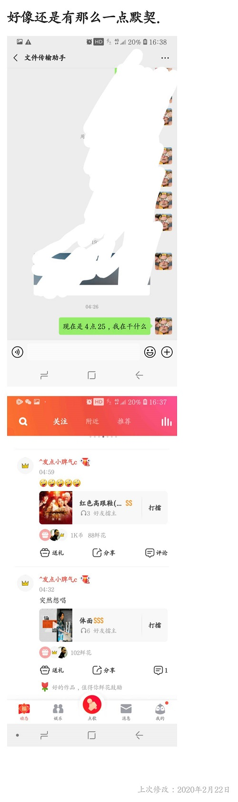

嘿,睡了吗?小魔女
|2020年2月9 日00点40分,第一次语音通话,了解认识你.
|2020年2月10日13点46分,第一次拨通你的电话.(号码已经熟记与心了,嘿嘿)
|2020年2月14日00点21分,第一封"情人节祝福信"(虽然字很丑,哈哈)
|2020年2月14日14点29分,第一次听你为我唱歌(恋人未归真好听..yy)
|2020年2月16日22点48分,第一次为你吹了天空之城(我自己都不想再听第二次.hh)
|2020年2月17日01点02分,第一次听你自己填词的弹唱(被埋没的歌手~我已经无限循环听了好几天了.hh)
|2020年2月20日03点30分,小魔女网页成功建立啦.
--------------记事本--------------
02月19日，我知道你在微信区玩儿王者，但是我微信区又没有账号，我在网上看了教程，写了脚本，挂了服务器，运行了2天算是把刷到了20级。
今天是02月21日凌晨四点， 猪妹，现在有空吗，我想跟你讲讲心里话。刚刚在床上翻来覆去的睡，总是睡不着。老实说，给你发消息，你很久时间没有回复，我真的很难受，我确信你看到信息了，但不知道你为什么不回复，或许是因为话题聊不下去等等。你知道吗，自从认识你以后，我时刻都关注着信息，无论是在哪儿，在做什么，担心你看不到我得回复会失望。 我想跟你做朋友，而且是目的性很强的那种。如果有机会，我希望这段恋爱能够长久，长久到互相陪着对方慢慢老去。我很久没有对一个女孩子心动过了，你是我这两三年里第一个心动的女生，也确信喜欢上的女生，我已经被你深深地吸引了，你讲普通话的声音，你的开朗，你的歌声，你身上的每一处都很特别。即使到现在我们还没在现实见面。 你真的很讨厌我吗？如果你对我很没有感觉，请说出来，因为时间久了，我怕忘不掉你。我真的很珍惜你，很想对你好，这一段时间，脑子里全是你。--突如其来的相遇，始料不及的欢喜
现在是02月22日，好像我们还是有那么一点默契的。。不过你还是没有回复我。。太晚了~那么用力唱歌对嗓子不好。

02月23日，你还是没有给我任何回复，我想过你可能的各种离开方式，却还是有点接受不了这么突然。你还记得你骂我笨蛋吗，我被你那句话击中了心口，真的，我是不是真的蠢得好笑。
02月24日，我的生活像是一根老藤，隔了老远才开一朵花。而你就是那朵花，不过这多花，绿肥红瘦。 我不敢联系你，我怕拒绝了，我也不知道你的状况了，我现在已经开始胡言乱语了，我还是睡觉吧。
02月25日， 有时候我就想神经病， 因为种种原因我的性格养成的有点怪， 看到你没有回复的时候，我挺无助的。 请你别离开我，虽然我不一定能让你很开心， 我不一定完美， 可是你在我会很安心， 想伸手抱抱你，想为你做很多， 想为你分担一些孤单，想知道你喜欢什么讨厌什么，想知道你最爱谁讨厌谁，想了解你接近你，我没有备胎， 也不玩暧昧， 我想把所有的温暖和宽容 眼泪和笑容 好坏脾气都给你。晚安
02月26日，这几天连续睁眼到天亮，昨晚做好仰卧起坐和空中蹬车50组之后居然直接睡了，还做了个大梦，梦里我去你的学校接你，替你拿不是很沉的东西，梦里我们还去了武大看樱花，用我不过关的拍照技术给你拍了很丑的照骗，我们玩儿的很开心，然后梦醒了。
02月29日， 我有点儿想你呢， 四年一次的2月29日，我的愿望是，好想和你在一起，然后我们一起完成各种事情。不过表白这么重要的事情，我喜欢通过网络来表达，然而好像我又没有机会了，一想到这，好心痛，好遗憾。
03月01日， 今天早上我开车准备去万州，结果到了万州的界限被拦下来了，需要健康证我才能进去，回来后我去了医院，结果排到下午结束都还没到我。